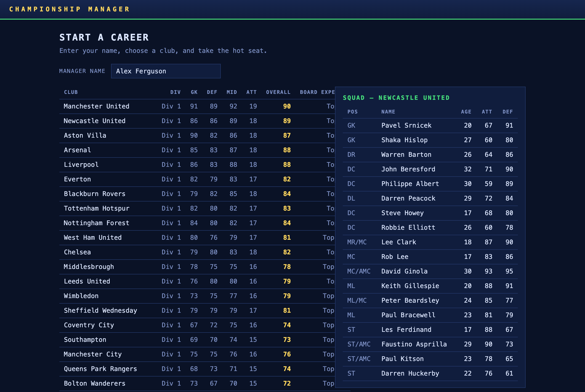
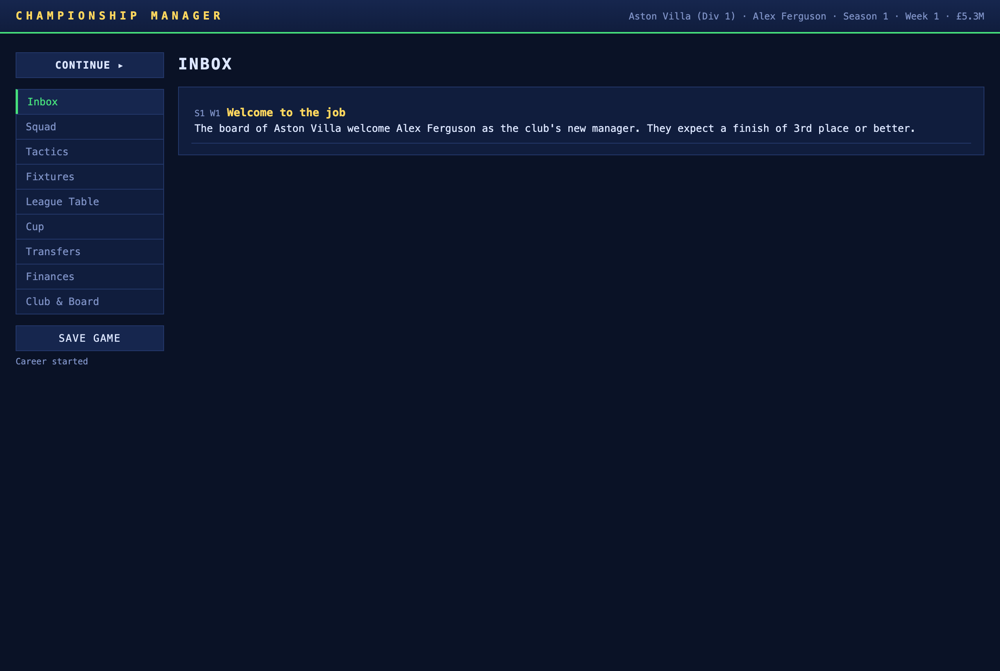
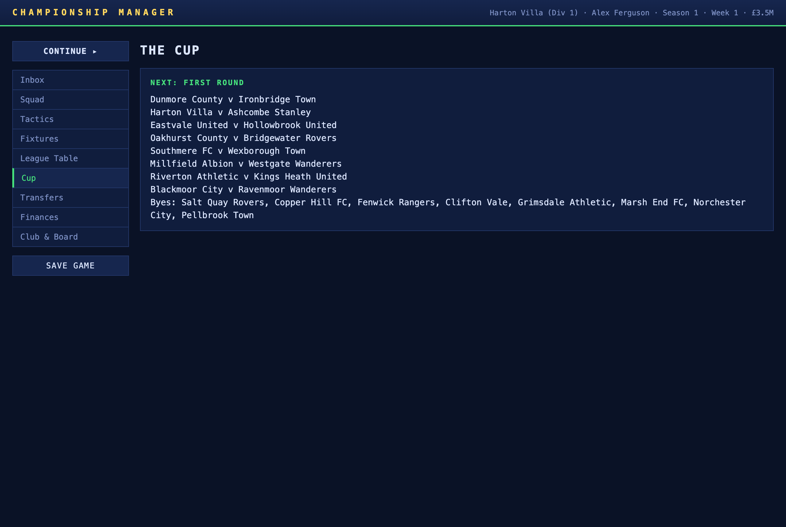
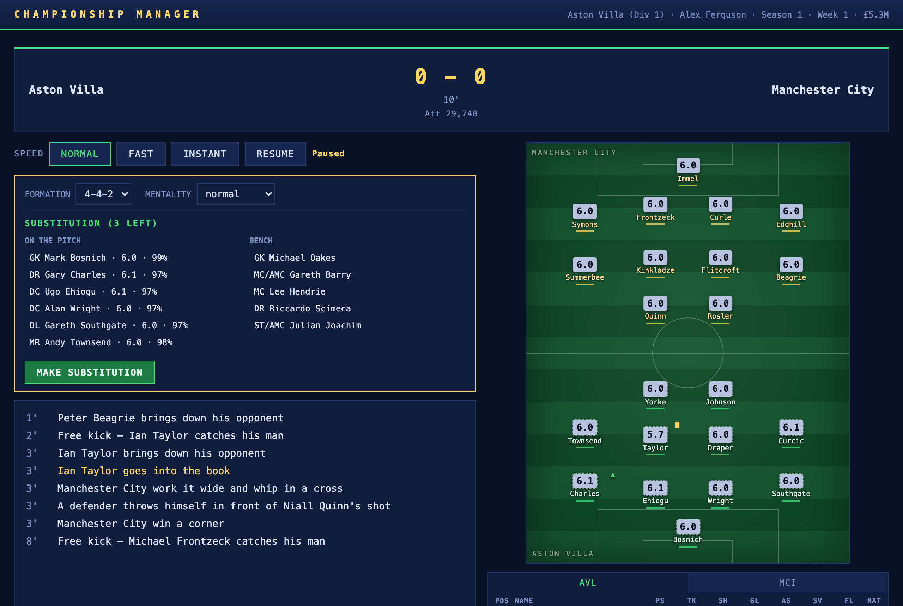

05 · UI / UX Design
Screen flows, design language, and real screenshots of the running application
1. Design Language
The interface deliberately mimics a retro management terminal: a deep navy surface, dense monospace tables, a pitch-green accent, and a gold highlight for prestige. The aesthetic is Championship Manager 99/00 — functional, information-dense, and instantly readable — rather than a modern glossy football product.
| Token | Value | Role |
|---|---|---|
--bg | #0a1226 | Page surface |
--surface | #101d3d | Panels & tables |
--surface-2 | #16264e | Hovers & buttons |
--accent | #46e07c | Pitch green — primary actions, active states |
--gold | #ffd75e | Prestige — scores, ratings, awards |
--red | #ff5d5d | Danger — injuries, red cards, relegation |
--font | Cascadia Mono / SF Mono | Monospace throughout |
Every screen is a table. The CM genre lives in dense rows of numbers; the UI leans into that rather than fighting it. Bars (condition/morale/confidence) are the only graphical data viz outside the match pitch, and they're 8px tall — present but never loud.
2. Information Architecture
The application has three top-level modes, switched by hiding/showing sections:
┌─────────────────────┐
│ Start Screen │ new career / continue
└──────────┬──────────┘
│ start
▼
┌────────────────────────────────┐
│ Management Hub │ ◄──── sidebar nav (9 screens)
│ inbox · squad · tactics · │ Continue ▸ advances time
│ fixtures · table · cup · │
│ transfers · finances · club │
└────────────┬───────────────────┘
│ Continue (when user has a fixture)
▼
┌────────────────────────────────┐
│ Match Day │
│ pre-match → live → full time │
└────────────┬───────────────────┘
│ Continue ▸
▼
(back to Hub → week summary)
The hub's left sidebar is the persistent spine: a prominent Continue ▸ button at the top, nine navigation buttons, and a save control at the foot. The header carries a live HUD (club, manager, season, week, balance).
3. Screen-by-Screen Specification
Each screen below pairs the design intent with a real screenshot captured from the running application.
3.1 Start / New Career
Entry point. A manager-name field, a "Continue saved game" button (shown only when a save exists), and a master club table paired with a live squad inspector. Hovering a club row populates the right-hand squad panel; clicking starts a career. Each club row shows division, unit ratings (GK/DEF/MID/ATT), an overall, and the board's expectation.

3.2 Inbox
The default landing screen after starting or continuing. Time-stamped news items
(newest first) with subjects in gold and bodies in body text. Items that carry an
offerId render inline Accept / Reject actions — the inbox is
not just a log, it's an actionable queue. A badge on the nav button counts pending offers.

3.3 Squad
The squad roster sorted by position then ability. Columns: pos, name (with status tags for INJ/BAN/LISTED), age, atk, def, condition bar, form, morale bar, wage, value, contract years (red when ≤1), and per-player List / Renew actions. A header summary shows squad size and the weekly wage bill.

3.4 Tactics
Formation and mentality selectors, an auto-pick button, and three tables: Starting XI (with slot labels — OOP tagged when a player is out of position), Bench, and Reserves. Interaction is click-to-swap: the first click selects a row (gold highlight), the second click on a different row swaps the two players. Reserves are derived but swap-able too.

3.5 Fixtures & Results
The full season calendar as a table: week number, competition label, and your match (opponent + H/A, or the scoreline once played). The current week is highlighted. Cup weeks show TBD opponents before the draw, or "eliminated" once you're out.

3.6 League Tables
Both divisions side by side, your division first. Standard P/W/D/L/GF/GA/GD/Pts columns. Promotion and relegation zones are marked with coloured left borders (green up, red down); your club row is highlighted. The header notes the movement rule for each division.

3.7 The Cup
Knockout bracket view. The "Next" panel shows the upcoming round's ties and byes; completed rounds list every tie with its scoreline, shootout result, and winner. When the cup is won, a gold winner panel replaces the next-round view.

3.8 Transfers
The market screen. Position and max-value filters; a results table showing pos, name (with status tags), club (or "Free agent"), age, atk/def (exact for own/scouted players, ranges for everyone else), value, asking price, and per-row Scout / Bid (or Sign for free agents) actions. A header shows transfer budget, balance, and the scout fee. Counter-offers update the asking price in place for a one-click accept.

3.9 Finances
Balance, transfer budget, weekly wage bill (flagged red if 30× the bill exceeds balance), and a gate-receipts panel: fanbase, capacity, last & average attendance, last gate money. The stadium expansion panel quotes the next build (seats + cost) or shows build progress, with the board's refusal reason when demand or funds are insufficient. A top-earners table closes the screen.

3.10 Club & Board
The strategic dashboard. Board confidence and manager reputation as bars; expectation vs current position; a league top-scorers table; and a past-seasons history table (champions, cup winner, your finish, top scorer). When a bigger club comes calling, a poach-offer panel with Accept / Decline appears at the top.

3.11 Pre-Match
Shown when Continue finds a user fixture. A three-column layout: your line-up, your bench (with the Kick off button), and an opposition report — the scout card with the opponent's division position, form guide (colour-coded W/D/L), danger man, and predicted XI (danger man highlighted). This is the payoff for the scouting system: tactical choices now have information to react to.

3.12 Live Match Day
The signature screen. A scoreboard (teams, score, clock with stoppage/ET, attendance), a speed bar (Normal / Fast / Instant + Pause), a commentary feed (auto-scrolling, colour-coded by event type), and a right-hand column with the formation pitch and a tabbed player-stats table.
The pitch shows both teams as chips positioned by slot, each carrying a live rating (colour-banded cold→hot), the surname, goal/card marks, and a team-colour tick. Goals trigger a scoreboard flash and a chip pop animation. When the match auto-pauses at a key moment, a gold sub-panel slides in with mid-match formation/mentality controls and the substitution UI (on-pitch list + bench list, "X left" counter).


3.13 Full Time
Scorers with minutes, man of the match (gold), and a symmetrical stats comparison (possession, shots, on target, corners, fouls, cards) with the leading side highlighted. A primary Continue ▸ button commits the result and advances the week.

4. Interaction Patterns
| Pattern | Where | Behaviour |
|---|---|---|
| Click-to-swap | Tactics, Sub panel | First click selects (gold), second click swaps; same row deselects. |
| Inline actions | Inbox, Squad, Transfers | Mini-buttons render inside the row/item that owns the action. |
| Auto-pause on key moment | Match Day | Half time / ET / red card / own injury halts the timer and opens the sub panel. |
| Speed control | Match Day | Normal (250ms) / Fast (60ms) / Instant (0, runs to completion). |
| Auto-save | Every transition | Continue, transfers, tactics, and match end all persist to localStorage. |
| Badge counters | Sidebar | Inbox badge reflects pending transfer offers. |
5. Responsive Behaviour
The layout adapts at three breakpoints:
- > 980px: full three-column pre-match; two-column match layout (commentary + pitch/stats).
- ≤ 980px: pre-match collapses to two columns; opposition report spans full width.
- ≤ 900px: match layout stacks to a single column.
- ≤ 720px: start-screen select-layout stacks; scoreboard shrinks; commentary height reduces.
6. Accessibility
- Team-selection rows are focusable (
tabindex="0") and activate on Enter/Space. - The commentary feed and squad panel use
aria-live="polite". - All interactive controls have visible
:focus-visibleoutlines in the accent colour. - The pitch carries an
aria-label="Formation view"; the player-stats table has a caption. - Status is conveyed by colour and text (status tags, rating bands) so colour is not the only signal.